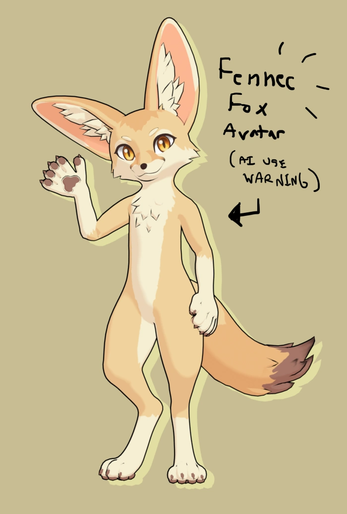
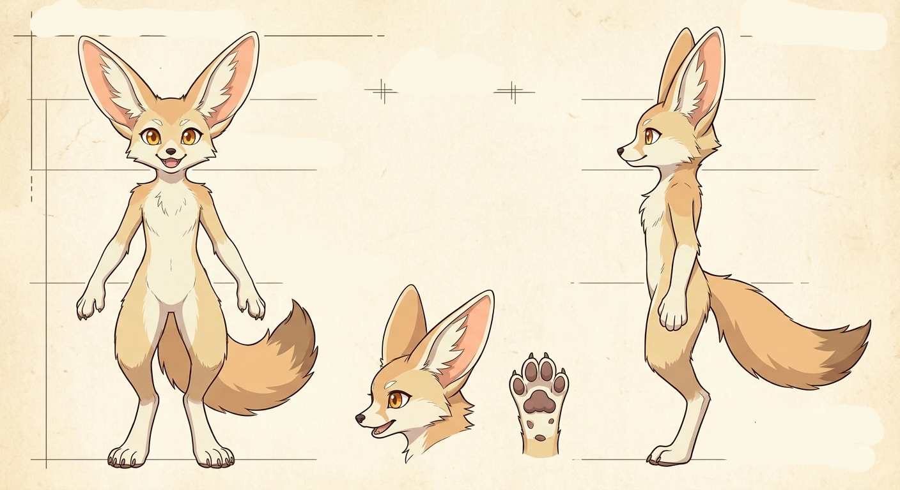
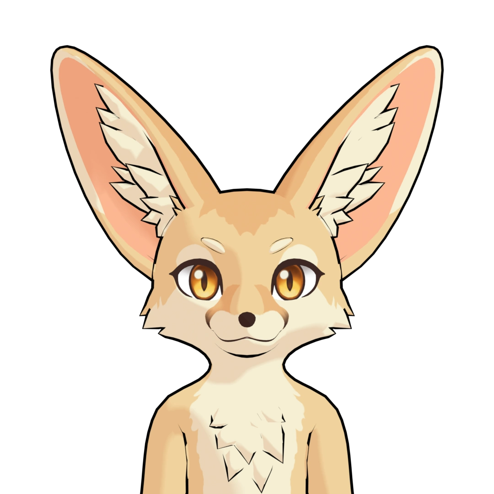
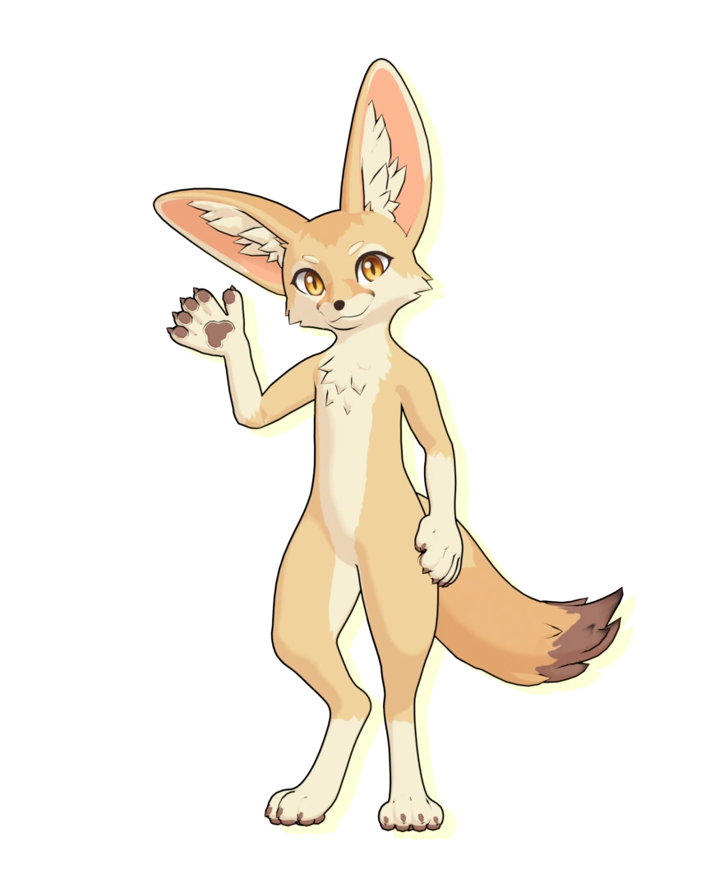
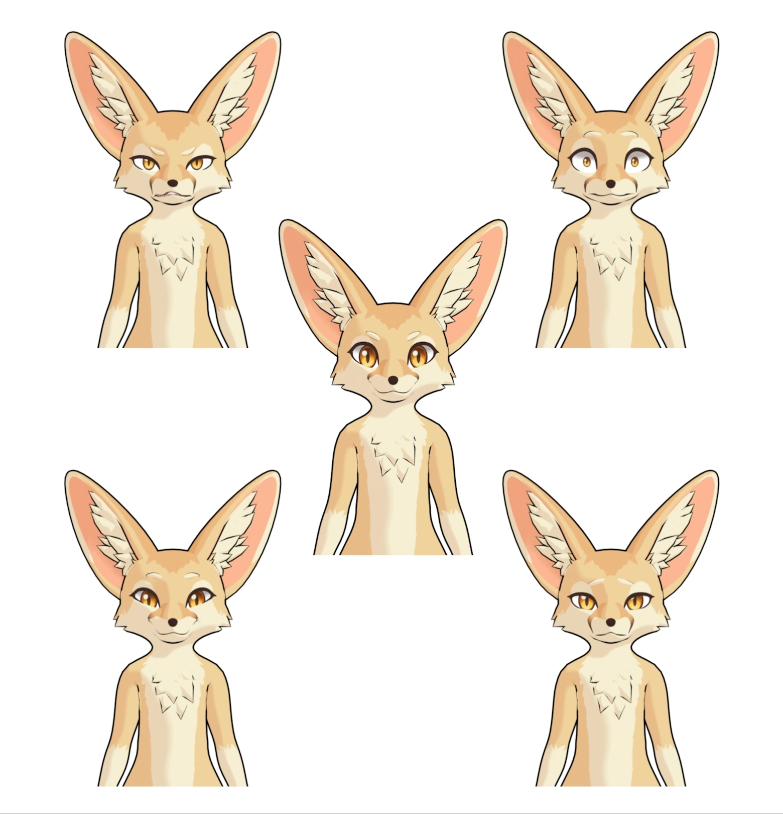
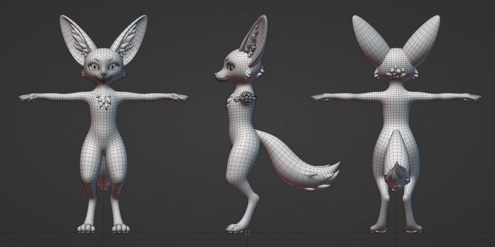
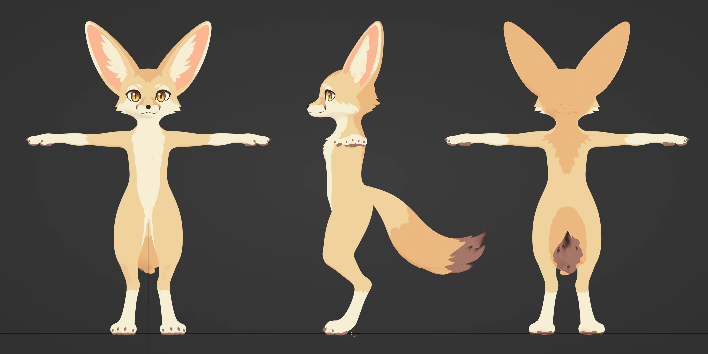

Page last updated: 11/19/2026

To be clear, the only AI generated part was the reference image. All actual modeling/texture/rigging work was done by me.
Very occasionally when I am bored, I like messing around with Gemini + Nano Banana, which has a very generous free-tier.
I wanted to know if the AI could generate a consistent character reference sheet. Honestly, I actually think it looks pretty good. Sure, it's a pretty generic looking character, but the refsheet was pretty easy to use and make a 3D model from. Which I found pretty impressive for AI (which is kinda running on mostly statistics and probabilities).

Reference image generated with Gemini. I erased the generated text because I found it cringey and a bit distracting.
I thought about releasing to public domain (bc I feel bad for using AI), but I've decided to keep this model to myself. Mostly because I am a kind of embarassed at the blendshape work (this was my first attempt at doing ARKit + Visemes + VSeeFace extra blendshapes. I overcomplicated things with my noob attempt at following this guide here).

Overall, I am pretty proud of it. I tried to make the textures easy to edit, by having symmetric parts be mirrored around the center. I also really like how the ear tufts and fur details turned out.



